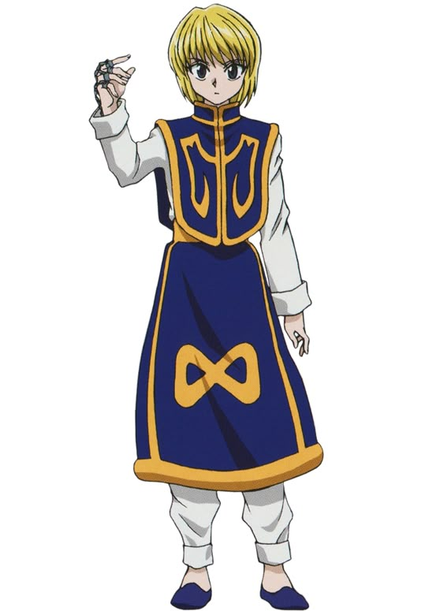

Specialist
What is an Specialist?
Specialist Nen user possesses a unique Hatsu ability that cannot be classified into the five standard Nen categories (Enhancement, Transmutation, Manipulation, Conjuration, or Emission).
← Back

Specialist Nen user possesses a unique Hatsu ability that cannot be classified into the five standard Nen categories (Enhancement, Transmutation, Manipulation, Conjuration, or Emission).
← Back